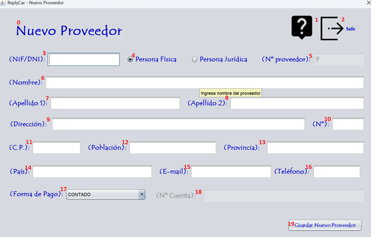

El alta de un proveedor consiste en el rellenado de la ficha con sus datos para poder ralizar las facturas y el seguimiento de las intervenciones. Sigue las instrucciones de la fotografía para realizar el proceso correctamente. Para realizar el alta de un proveedor debe ingresar los datos que corresponden a la numeración expuesta en la fotografía. Vamos a proceder:

0 - Título de la pantalla, descripción de lo que significa la pantalla.
1 - Botón para proceder a leer la ayuda de la aplicación.
2 - Botón para salir de la aplicación.
3 - Ingresa el código de identificación del proveedor.
4 - Elige la persona jurídica a la que pertenece el proveedor.
5 - Nº del proveedor que tiene en nuestra empresa.
6 - Nombre de la empresa o nombre del proveedor si es persona física.
7 - Primer apellido del proveedor si es persona física.
8 - Segundo apellido del proveedor si es persona física.
9 - Dirección fiscal del proveedor
10 - Nº de la dirección fiscal del proveedor.
11 - Código Postal del proveedor.
12 - Población del proveedor.
13 - Provincia del proveedor.
14 - País del proveedor.
15 - E-mail del proveedor.
16 - Teléfono del proveedor.
17 - Elige la forma de pago del proveedor.
18 - Nº de cuenta bancaria del proveedor.
19 - Guardar el nuevo proveedor.
Nota: Pulsando F1 en la ventana principal, se abrirá esta página de ayuda.